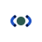
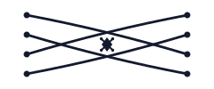

full · 96
Marca institucional (P99): UMA PONTE em um segundo. Margens → ponte (arco + tabuleiro partido) → vão central + jóia (a decisão que conecta) → linha de travessia. Logo = ponte · Marca = ponte + conexão + contexto · Experiência = fragmentação → conexão → clareza → evolução. Abra e compare: fundo claro, fundo azul-noite, monocromático, favicon, horizontal e o teste de redução (128 → 16 px).


hsl(226 64% 14%) · estrutura (pilares)hsl(221 72% 45%) · arco + tabuleirohsl(165 34% 26%) · vão / jóiahsl(205 32% 62%) · estrutura (pilares)hsl(205 50% 80%) · arco + tabuleirohsl(157 40% 45%) · vão / jóia